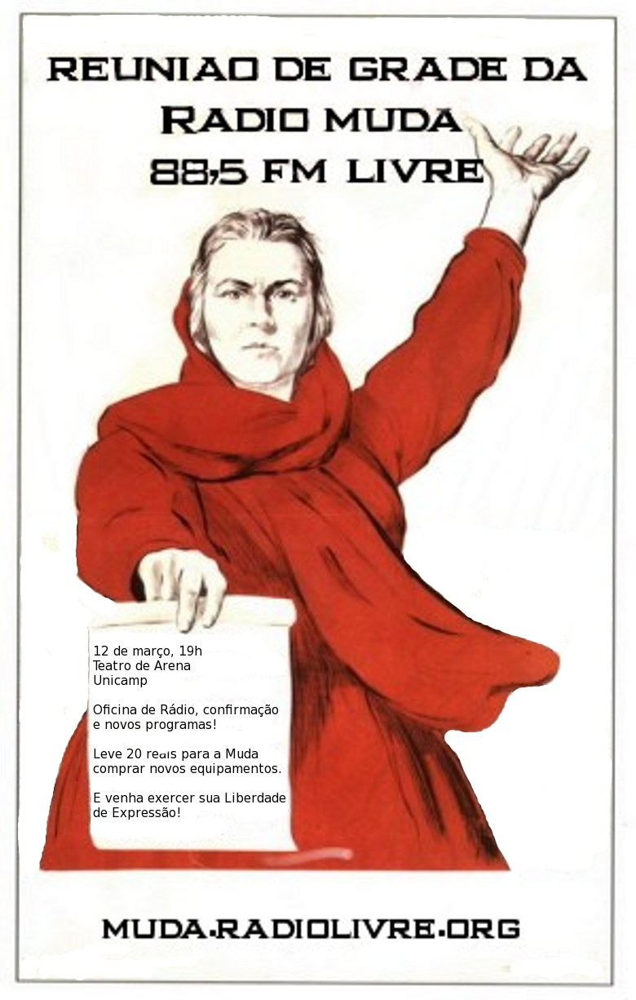

Recentemente publicamos uma nota sobre a decisão positiva para as rádios livres [5]. Um pouco antes, comentamos sobre "estruturas distribuídas" [6]. Thiago Novaes disse:
Minha crítica não está sobre o desenvolvimento dessas alternativas, mas do esquecimento de nossa capacidade de construção técnica de autonomia, as tais infraestruturas autônomas: construa seu transmissor de rádio e use a ionosfera para propagar o seu sinal. Tudo começa com a defesa do Digital Right Management (DRM). Como não temos satélites, fibras ou provedores, a ideia de uma comunicação autônoma perpassa hoje, em nosso entendimento, a busca de AUTONOMIA, e o único padrão que atende às ondas médias e baixa-potência é o DRM. É isso: DRM como padrão de rádio digital. O Brasil está pra escolher seu padrão tecnológico que irá compor o sistema de rádio digital brasuca. Estão na mesa dois sistemas: o Rádio Digital Mundial europeu e o HD rádio norte-americano. É assustador que os movimentos da comunicação no Brasil estejam se omitindo nesse debate, sendo extremamente ameaçadora a adoção do HD rádio, que significaria acabar com o AM, não otimizar o uso do espectro e manter os radiodifusores onde estão, no monopólio, além de excluir as radcom do dial, pois não poderiam comprar os equipo. O que podemos fazer de efetivo para não sermos omissos? O que podemos fazer de efetivo para ajudar a dar força à escolha do Rádio Digital Mundial europeu?
Agora, Novaes divulgou que no dia 12 de março (segunda-feira) acontecerá às 19 horas, no Teatro de Arena da Unicamp, em Campinas, o Grande Encontro da Rádio Muda. Na pauta para a reunião consta: história das rádios livres e da muda e as suas implicações jurídicas; oficina de operação dos equipos da rádio; e escolha dos horários.
